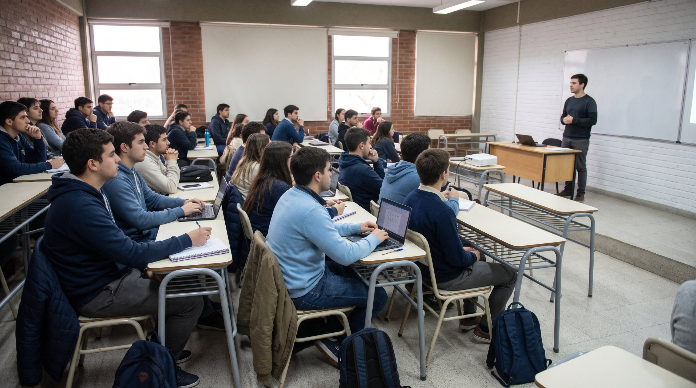
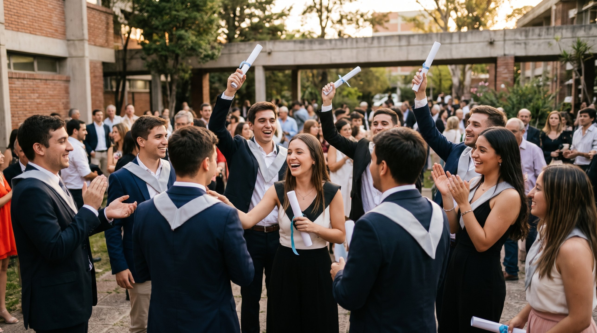

Facultad de Ciencias Exactas e Ingeniería · UCALP
Conectamos a nuestra comunidad de egresados con oportunidades de desarrollo profesional, intercambio de experiencias y vínculo activo con la facultad.
Sobre el Centro
La Facultad de Ciencias Exactas e Ingeniería forma profesionales con altos estándares académicos y éticos, orientados a la más alta calificación en sus disciplinas. Sus dos grandes áreas — Informática y Seguridad, Salud y Medio Ambiente — incluyen carreras únicas en el Gran La Plata como Ingeniería Ambiental y la Licenciatura en Seguridad, Salud y Ambiente Laboral.
El Centro de Graduados nace para fortalecer el vínculo entre la facultad y su comunidad de egresados: consolidar una red integrada y participativa, generar espacios de intercambio y actualización profesional, y contribuir al crecimiento de las nuevas generaciones a través de la experiencia de quienes ya recorrieron el camino.

0%
de los graduados consiguió empleo en su área en menos de 6 meses
0%
se declara satisfecho o muy satisfecho con su situación laboral actual
0 países
Argentina, España, Canadá y Australia — destinos donde trabajan nuestros egresados
Fuente: encuesta a 40 graduados de la FACEI (2025)
Graduados destacados
Nuestros graduados se desarrollan profesionalmente en Argentina y en el exterior, en roles que van desde el desarrollo de software hasta la gestión ambiental.
Ing. Ambiental · 2022
Manitoba, Canadá
Admin. de Operaciones en una ONG del río Souris dedicada a la preservación de cuencas hidrográficas. Usa drones y GIS a diario.
Analista de Sistemas · 2015
Exterior
Líder de equipos de desarrollo y QA en entornos Agile. Creció desde desarrollador junior hasta liderazgo en empresas internacionales.
Lic. en Seg. e Higiene · 2019
Sydney, Australia
Aplica conocimientos de ergonomía e higiene ocupacional en el sector privado australiano. Valora la base sólida recibida en la FACEI.
Lic. en Sistemas · 2020
Madrid, España
Profesional IT en el sector tecnológico madrileño. Muy satisfecho con su desarrollo profesional post-graduación en la FACEI.
Historias de egresados

Ha sido la llave para desarrollarme profesionalmente. Pude asumir nuevos roles en la empresa enfrentando nuevos desafíos y generando un espacio de aprendizaje y trabajo en equipo permanente.
Egresado de Ing. Ambiental
Ing. Ambiental · 2020 · La Plata
La facultad termina de modelar el carácter, la constancia, la forma de pensar. Hoy sin haber estudiado en la universidad, no hubiese tenido las herramientas para desarrollarme profesionalmente.
Egresado de Lic. en Sistemas
Lic. en Análisis de Sistemas · 2015
Para llevar adelante mi trabajo, todos los días uso conocimientos que aprendí en la facultad. Puedo estar publicando algo en redes a la mañana y pasar a hacer un mapeo con sistemas LiDAR a la tarde.
Darío Alba
Ing. Ambiental · 2022 · Manitoba, Canadá
Desarrollo profesional
La UCALP acompaña a sus alumnos y graduados en el proceso de inserción laboral y desarrollo profesional continuo.
Accedé a oportunidades laborales y pasantías en organizaciones públicas y privadas a través del portal de la universidad.
Acceder al portal →Cursos, talleres y diplomaturas ofrecidos por la facultad para mantenerte actualizado en las áreas más demandadas: IA, seguridad, gestión, herramientas digitales.
Ver cursos disponibles →Actividades y comunidad
El Centro organiza periódicamente conferencias, encuentros disciplinarios, conversatorios y espacios de intercambio profesional. Mantenemos el vínculo activo entre la facultad y sus egresados, contribuyendo al crecimiento de las nuevas generaciones.
Encuentros con profesionales y expertos en temas de actualidad.
Espacios para conectar con otros egresados y ampliar tu red de contactos.
Seguinos en redes sociales para enterarte de las últimas novedades del Centro.
Contacto
Si sos egresado de la FACEI, actualizá tus datos para que podamos mantenerte informado sobre oportunidades, eventos y novedades del Centro de Graduados.
Completar formulario de vinculaciónFacultad
Facultad de Ciencias Exactas e Ingeniería — UCALP
Dirección
Diagonal 73 Nº 2137, La Plata, Buenos Aires
facei@ucalp.edu.ar
Teléfono
221 4393204